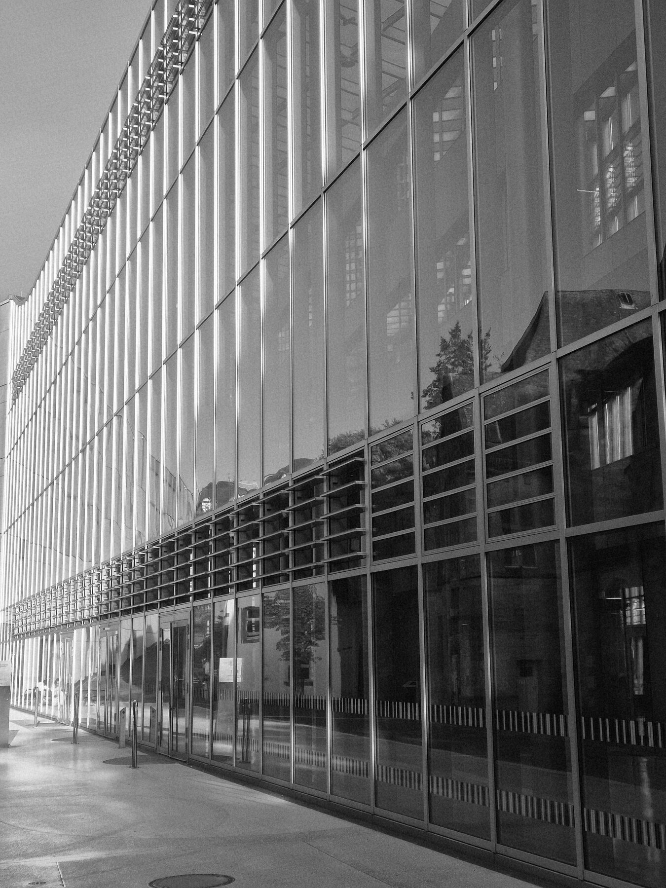
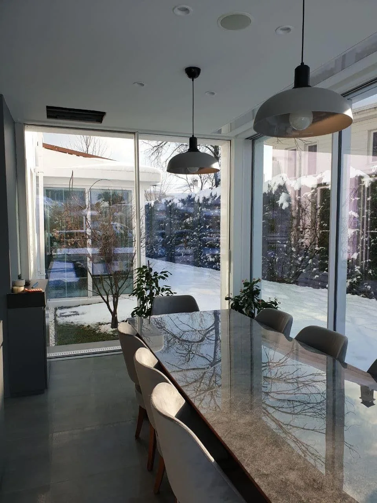
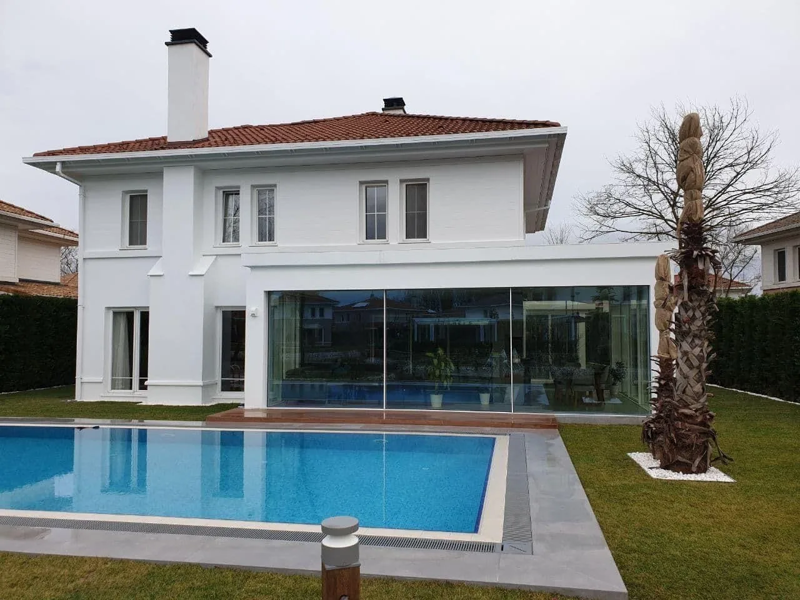

Российские системы · первые этажи
АЛРОКС · СИАЛ · ТАТПРОФ
Входные группы, витражи и коммерческие помещения, где важны доступность, понятная переработка, ремонтопригодность и объектная экономика.
Алюминий
Первые этажи, фасадная плоскость, премиальный частный сегмент и крупноформатная автоматика требуют разных систем. Мы выбираем не бренд ради бренда, а инженерную логику под объект.
Карта систем
Российские системы · первые этажи
Входные группы, витражи и коммерческие помещения, где важны доступность, понятная переработка, ремонтопригодность и объектная экономика.
Практичные фасадные системы
Рабочая полка для фасадов и оконно-дверных задач, когда критичны сроки, наличие профиля, бюджет и предсказуемая логистика.
Отдельная системная школа
Самостоятельная архитектурная и инженерная логика: фасадная сетка, окна, двери, раздвижные конструкции, автоматика, совместимость компонентов и проектная документация.
Премиум · минимализм · крупный формат
Тёплые окна и двери, фасады, минималистичные порталы и крупноформатные раздвижные конструкции для частной и коммерческой архитектуры.
Фасадный фокус
Не подменяем проект перечнем профилей. Смотрим на оболочку целиком: ритм стоек и ригелей, прозрачные и непрозрачные поля, способы открывания, примыкания, эксплуатацию и управление.
Четыре семейства ниже — не рейтинг и не готовая спецификация, а разные отправные точки для проектирования.

Четыре сценария
Каждый сценарий привязан к официальной продуктовой странице; формулировки пересказаны и не заменяют расчёт или документацию для конкретного объекта.
Гибкая основа
Стоечно-ригельная система с лицевой шириной 50 мм для фасадов и светопрозрачных покрытий. Подходит как отправная платформа, когда важны варианты прижимных планок, крышек и системно проверяемые сочетания с открывающимися элементами.
Панорамная линия
Panorama Design для проектов, где нужна минимальная видимая ширина и системное решение цельностеклянного угла без вертикальной стойки. Совместимые элементы подбираются внутри подтверждённой конфигурации.
Открывание в ритме фасада
Concealed Vent объединяет несущую структуру и открывающуюся створку так, что снаружи фиксированные и открывающиеся поля читаются одинаково. Возможен сценарий управляемого проветривания совместимыми приводами.
Элементная сборка
Платформа для модульных элементных фасадов с высокой долей заводской готовности. В варианте CV верхнеподвесные или параллельно-отставные створки скрыты в несущей структуре при общей лицевой ширине 80 мм.
Интегрированная оболочка
Окна, двери, раздвижные элементы, солнцезащита, вентиляция и автоматика рассматриваются вместе, но применяются только в совместимых конфигурациях. Совпадения бренда недостаточно: проверяем системную документацию, нагрузки, управление, примыкания и доступ к обслуживанию.
Путь проектирования
Система появляется после архитектурной и инженерной постановки задачи — не раньше.
Фиксируем оси, этажность, прозрачные и непрозрачные поля.
Определяем открывание, проходы, вентиляцию, солнцезащиту и управление.
Сопоставляем задачу с FWS, Panorama Design или элементной платформой.
Проверяем допустимые сочетания, примыкания и маршруты кабелей.
Уточняем нагрузки, теплотехнику, стекло, крепления и водоотвод.
Закрепляем решения в документации, образце и объектных согласованиях.
Панорамное остекление
Системы для террас, веранд, зимних садов и частной архитектуры: безрамные и тёплые решения, складная и подъёмная механика, интеграция автоматики. Конфигурацию подбираем после расчёта конкретного объекта.


Мировые ориентиры
Sky-Frame Slope, Vitrocsa Turnable Corner и air-lux Descending Window показывают, какие сценарии уже существуют на мировом рынке. Это ориентиры для обсуждения архитектурной задачи; применимость конкретного решения определяется проектом.
Раздвижное остекление в наклонной прозрачной оболочке.
Трансформация углового проёма с поворотными стеклянными панелями.
Вертикально опускающееся крупноформатное остекление.